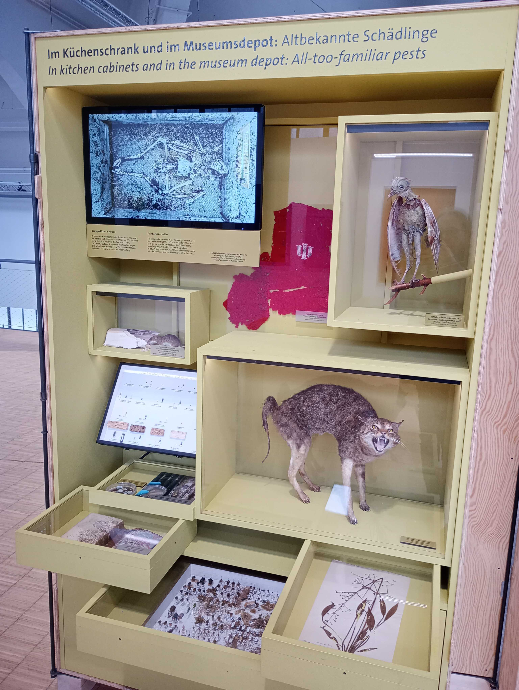
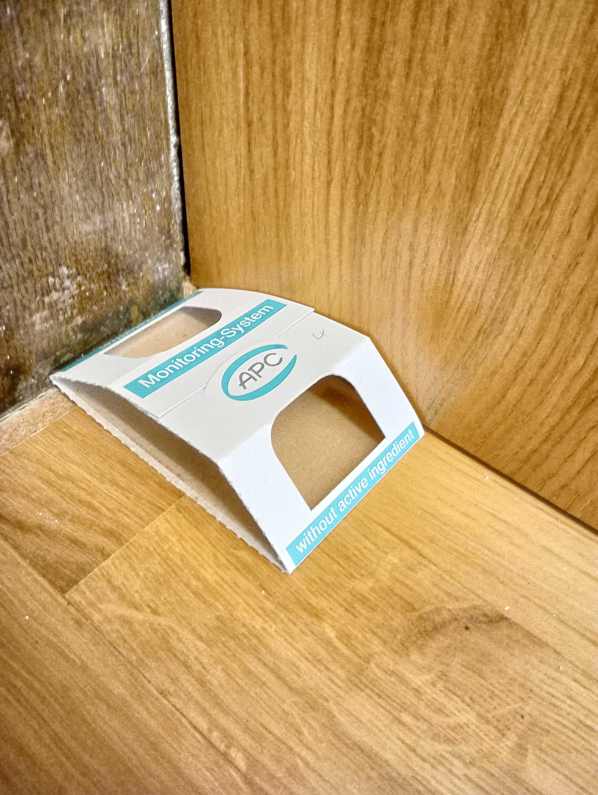

Integrierten Schädlingsbekämpfung(oft wird auch im Deutschen der englische Fachbegriff IPM für „Integrated Pest Management“ verwendet) geben." abstractalt: "Most of us have likely had to deal with them at some point, even if few of us enjoy talking about it: mealworms, clothes moths, ants, mice, silverfish and paperfish, cockroaches, carpet beetles, and similar critters crawling and scurrying around the home. Collectively, these creatures are often referred to as pests. Although they perform vital biological functions in nature, they often cause considerable damage within and to human dwellings. Cultural institutions such as archives, libraries, and museums are not exempt from this threat and, due to the often unique cultural heritage they preserve, bear a special responsibility regarding pest control. Based on a small traveling exhibition that was hosted at the Deutsches Museum in Munich from January to April 2026, this article provides an overview of the background, methods, and current developments in the so called
Integrierte Schädlingsbekämpfung(often referred to by the English term IPM for
Integrated Pest Management, even in German)." pdf: "https://doi.org/10.18452/37906" doi: "10.18452/37906" date: 2026-07-02 comments: false sharing: true footer: true ---
Als die kleine Kabinettausstellung Hier nagt nicht nur der Zahn
der Zeit – Museumskäfer, Motten und Schimmel in Zeiten des
Klimawandels
, erstellt vom Naturhistorischen Museum Wien, im Januar
2026 im Verkehrszentrum des Deutschen Museums in München eröffnete,
wurde in der begleitenden Pressemitteilung die Leiterin der
Restaurierungswerkstätten des Münchner Museums zitiert mit: Da haben
wir den Kofferraum des Autos aufgemacht, und es kam uns eine ganze Wolke
von Motten entgegen.
1 Dass man so offen über die eigenen
Probleme mit Schädlingsbefall spricht und damit auch preisgibt, dass das
anvertraute Kulturgut Schaden genommen hat, ist nicht selbstverständlich
und im ersten Moment vielleicht auch etwas unangenehm. Zumindest im
Museumsbereich wird es aber immer selbstverständlicher, auch darüber zu
kommunizieren. So kann die Öffentlichkeit über die Arbeit der
Kulturinstitutionen, mit all den zugehörigen Schwierigkeiten und
Aufwänden, aufgeklärt und auch ein Bezug zu den Belangen von
Privatpersonen hergestellt werden. Schädlingsbekämpfung, die Insekten,
an die man in diesem Kontext meist zuerst denkt, und das laufende
Insektensterben, sind alltägliche Berührungspunkte, die durch zunehmende
Globalisierung und Klimawandel immer weiter in unser Leben eingreifen
und an Bedeutung gewinnen.

Die angesprochene Ausstellung leistete einen kleinen Beitrag zu dieser Kommunikation. Sie gliederte sich in drei Teile, an denen sich auch der Aufbau dieses Beitrags orientiert: Zuerst ein Einblick in häufige Museums- und Wohnungsschädlinge, daran anschließend historische und aktuelle Bekämpfungsmethoden im Überblick und abschließend wird der Einfluss des Klimawandels auf Schädlinge thematisiert.
Dass ein Technikmuseum wie das Verkehrszentrum des Deutschen Museums – in dem vor allem Autos, Flugzeuge, Eisenbahnen und ähnliche Gefährte ausgestellt sind – stark mit Schädlingen zu kämpfen hat, mag auf den ersten Blick verwundern. Bei genauerem Hinsehen erklärt sich dieses Phänomen aber schnell: Schädlinge benötigen zur Ernährung organisches Material. Neben Lebensmitteln zählen dazu beispielsweise auch Leder, Fell, Holz, Stroh, Leim, Papier sowie Web- und Füllstoffe aus Wolle, Baumwolle, Leinen und ähnlichen Rohstoffen. In älteren Fahrzeugen wurden Kopfstützen, Sitze, Gestelle oder eben der Teppichbelag im Kofferraum eines Autos aus eben diesen Materialien gefertigt und bieten damit besten Boden für allerlei Insekten und Nagetiere.
Noch viel mehr bedroht sind naturhistorische und ethnologische
Sammlungen, aber auch Kunstmuseen, in denen präparierte Tiere und
menschliches Kunsthandwerk bewahrt werden. Schädlinge sind hier schon
ein altbekanntes Problem, was man exemplarisch am sogenannten
Museumskäfer (Anthrenus museorum), einer Unterart der
Speckkäfer (Dermestidae), festmachen kann, der schon 1761 von
Carl von Linné diesen Namen erhielt und von ihm mit Habitat in
museis, quæ destruit
2 beschrieben wurde. Er frisst
Keratin, einen Stoff, der in Haaren und Chitin enthalten ist, und fühlt
sich somit in biologischen Sammlungen pudelwohl.
Ein neuartiger Schädlingsbefall, der letztes Jahr durch die Presse ging, ist das Auftreten von Schimmelpilzen der Sorte Aspergillus restrictus in einer ganzen Reihe von dänischen Museen.3 Diese Pilze zeichnen sich vor allem dadurch aus, dass sie im Unterschied zu den bekannteren, Feuchtigkeit liebenden Schimmelpilzen, ein trockenes Raumklima bevorzugen und sich entsprechend auch in klimatisierten und alle aktuellen Anforderungen des Bestandsschutzes erfüllenden Museumsdepots ausbreiten konnten. Hier werden in Zukunft neue Wege gefunden werden müssen, um Museumsobjekte, aber auch Archivalien und Buchbestände zu schützen.
Einen Überblick über alle relevanten Schädlinge zu geben, ist an dieser Stelle sicherlich nicht möglich. Aber einige besonders für Bibliotheken relevante Insekten sollen an dieser Stelle kurz aufgegriffen werden. Insbesondere ist hier das Papierfischchen (Ctenolepisma longicaudatum) zu nennen, der größere Verwandte der bekannten Silberfischchen. Während diese sich gern in feuchten Bädern und Küchen an Milben, Schimmel und anderem gütlich tun, kommen Papierfischchen auch mit einem wesentlich trockeneren und wärmeren Raumklima zurecht. Sie können bis zu circa sechs Jahre alt werden, sind anspruchslos, widerstandsfähig und ernähren sich, wie der Name sagt, von Papier und Pappe. Ihre Fraßspuren tauchen als unregelmäßige, mäandernde Gänge im Papier auf und können bei starkem Befall signifikante Schäden an Buchbeständen verursachen. Bemerkenswert am Papierfischchen ist, dass es vor etwa zehn bis fünfzehn Jahren kaum Thema im Fachdiskurs der europäischen Schädlingsbekämpfung war, sich aber seitdem rasant ausgebreitet hat – nicht zuletzt durch den florierenden Online-Handel, mit dessen Paketen es um die ganze Welt reist.
Der Brotkäfer (Stegobium paniceum), ein Vertreter der Nagekäfer, frisst nicht nur Brot, sondern auch gern den stärkehaltigen Kleber, der in alten Bucheinbänden verwendet wurde. Obwohl er nur wenige Millimeter klein ist, kann er in Massen auftreten und unwiderrufliche Zerstörungen verursachen – so geschehen beispielsweise in den Bibliotheken des Wiener Schottenstifts oder der zum UNESCO-Weltkulturerbe gehörenden Territorialabtei Pannonhalma in Ungarn.4
Früher in Wohnungen und Kultureinrichtungen weit verbreitet und heute aufgrund des wärmeren und trockeneren Raumklimas seltener geworden, ist die umgangssprachlich als Holzwurm bekannte Larve des Gemeinen Nagekäfers (Anobium punctatum). Er ist heute noch in feuchten Kellern und Gemäuern zu finden, wird in beheizten Räumen aber langsam durch den aus dem Mittelmeerraum kommenden Südlichen Nagekäfer (Oligomerus ptilinoides) ersetzt, der sich auch in trockenerem Holz wohlfühlt und sich in hölzernen Buchdeckeln und alten Regalen und Fußböden ausbreiten kann.
Neben den genannten Arten existiert noch eine fast unüberschaubare und sich stetig wandelnde Vielzahl an potentiellen Schädlingen: Speck-, Teppich-, Pelz-, Museums-, Nage-, Wespen- und Wodkakäfer, aber auch Silber-, Papier- und Geisterfischchen sowie Kleider-, Pelz- und Lebensmittelmotten und viele mehr stellen eine potentielle Gefahr für Bibliotheken und andere Kultureinrichtungen dar. Inzwischen wurden ausgeklügelte Systeme entwickelt, um durch sie verursachte Schäden zu minimieren.
Um Schädlingen und insbesondere Insekten vorzubeugen oder aktive Befälle zu bekämpfen, wurden schon in der ersten Hälfte des letzten Jahrhunderts verschiedenste Chemikalien eingesetzt, die in den allermeisten Fällen nicht nur für Tiere, sondern auch für Menschen äußerst gesundheitsschädlich sind. Chloroform, Arsen und Dichlordiphenyltrichlorethan, das unter der Abkürzung DDT Aufsehen erregte, sind nur einige der bekannteren eingesetzten Gifte. Ihre Wirkung hallt noch heute nach, denn viele Museumssammlungen wurden so intensiv mit ihnen behandelt, dass einige Depots heute nur noch mit Schutzkleidung betreten werden können. Die Gefahr geht dabei nicht nur von den Objekten selbst aus, sondern beispielsweise auch von dem Staub, der durch sie kontaminiert werden kann und über Hautkontakt oder die Atemwege den Weg in den menschlichen Körper findet.5
Heute gehen Kultureinrichtungen mit dem Konzept der Integrierten
Schädlingsbekämpfung
(IPM) einen nachhaltigeren, umwelt- und
gesundheitsfreundlicheren Weg der Bestandserhaltung. Bereits 2016 in der
Norm DIN EN 16790:2016-12 Erhaltung des kulturellen Erbes –
Integrierte Schädlingsbekämpfung (IPM) zum Schutz des kulturellen
Erbes
festgehalten und standardisiert, baut es auf den drei Säulen
Monitoring/Diagnose, Prävention und Schädlingsbekämpfung auf.6
Um die Eckpfeiler des IPM zu illustrieren, sollen hier beispielhaft die Maßnahmen am Deutschen Museum (DM) in München skizziert werden. Sie decken sicherlich nicht alle Aspekte des IPM umfassend ab, geben aber einen guten Einblick in die wichtigsten Anwendungen. So wird das IPM am DM in allen Sammlungsbereichen, also in Archiv, Bibliothek und Objektsammlung, angewendet. Zum Monitoring werden verschiedenste Fallen ausgebracht, die bedarfsgerecht mehrmals pro Jahr ausgewechselt und ausgewertet werden. Durch das Führen einer detaillierten Statistik, ausgewertet nach Zeitpunkt, Ort, Art und Häufigkeit der gefundenen Insekten, können Rückschlüsse auf allgemeine Trends der Schädlingsentwicklung, aber auch akute Befälle mit dringendem Handlungsbedarf identifiziert werden.
Je nach Art der überwachten Sammlungen kommen dabei unterschiedliche Fallen zum Einsatz. In Archiv und Bibliothek sind dies vor allem dreieckige Klebefallen aus Pappe, die auf dem Fußboden und in den Regalen ausliegen. Zur Überwachung der besonders relevanten Papierfischchen ist nicht einmal das Anbringen eines Lockstoffs erforderlich, da sie von dem Pappkarton angezogen werden, aus dem die Falle selbst besteht.

In den Objektsammlungen kommen zusätzlich noch andere Varianten von Insektenfallen zum Einsatz. Dazu zählen beispielsweise mit Pheromonen behandelte Klebefallen, die männliche Motten anziehen und damit nicht nur einen Beitrag zur Überwachung, sondern auch zur Bekämpfung leisten, da sie den Fortpflanzungszyklus unterbrechen. Für lichtsensible Fluginsekten werden dagegen Fallen mit einer Lampe ausgebracht, die blaues UV-Licht aussendet. Die Wahl der Fallenart richtet sich dabei nach der Art der in den Räumlichkeiten gelagerten Objekte.
Wenn eine Datengrundlage bezüglich der vorhandenen Schädlinge vorliegt, kann die Diagnose der Einfallswege beginnen. Liegt es beispielsweise an den geöffneten oder undichten Fenstern? An Besuchenden oder anderen Personen, die über Kleidung und Gepäck Insekten einschleppen? Wurden durch Neuzugänge oder deren Verpackungsmaterial Schädlinge in die Sammlung getragen? Je genauer die Ursachen identifiziert werden, desto besser können für die Zukunft Vorkehrungen getroffen werden.
Naturgemäß sind eine gute und regelmäßige Reinigung der Räume, ein angemessenes Raumklima und die Verhinderung der Einführung neuer Schädlinge (durch Bestandszuwächse oder Ähnliches) die Basis der Vorsorge. Eingehende Sammlungsobjekte werden bei Ankunft einer genauen Prüfung unterzogen und auf Schädlinge, aber auch auf Gefahrstoffe hin untersucht. Idealerweise verbringen sie auch eine gewisse Zeit in Quarantäne und werden dort gesäubert.
Sollte doch ein Schädlingsbefall festgestellt werden, gibt es heute viele Bekämpfungsmethoden, die ohne Gift auskommen. Wie erwähnt leistet bereits das Ausbringen der Klebefallen, deren Anzahl bei Bedarf erhöht wird, einen gewissen Beitrag zur Bekämpfung. Sind spezifische Objekte befallen, können sie je nach Größe und Material beispielsweise über mehrere Tage mit Kälte, Hitze oder Stickstoff behandelt werden. Kleinere Objekte können dabei in speziellen Schränken oder Räumen untergebracht werden, während größere in Folie eingewickelt werden. So wurde das oben erwähnte, von Motten befallene, Auto luftdicht in Alufolie verpackt, die mit Stickstoff gefüllt wurde. Dies geschah mitten im Publikumsverkehr, in den Ausstellungsräumen des Museums, um Besuchende über den Vorgang zu informieren.
Sind Objekte sehr groß – Flugzeuge, Eisenbahnen und Ähnliches –
können gegen gewisse Schädlinge auch Nützlinge
ausgebracht
werden. Dabei handelt es sich um Insekten (oder ähnliche Kleintiere),
die andere Insekten als Nahrung nutzen. In Fahr- und Flugzeugen des
Deutschen Museums werden so regelmäßig Schlupfwespen
(Trichogramma) eingesetzt. Diese parasitieren die Eier von
Motten, verhindern dadurch das Entstehen neuer Generationen und sterben
in der Folge selbst ab. Ist der Befall im Gebäude selbst verortet, zum
Beispiel im Parkettboden, besteht auch die Möglichkeit der Bestrahlung
mit Mikrowellen.
Im modernen IPM werden also Methoden zur Prävention, zum Monitoring und zur Bekämpfung auf die vorhandenen Räumlichkeiten, die bewahrten Sammlungsobjekte und die vorkommenden Schädlinge abgestimmt und bedarfsgerecht angepasst. Neue Herausforderungen ergeben sich dabei durch neue Schädlingsarten und Verhaltensänderungen, die durch den Klimawandel beeinflusst werden können.
Dass der Klimawandel die Verbreitung von Schädlingen in Museen und anderen Kultureinrichtungen verändert, ist eine naheliegende Vermutung, deren konkrete Erforschung sich aber noch in der Anfangsphase befindet.7 Ausgangspunkt der in diesem Beitrag aufgegriffenen Sonderausstellung des Naturhistorischen Museums Wien und des Kurators Pascal Querner war deshalb auch ein Forschungsprojekt, das genau diese Einflüsse des Klimawandels in österreichischen Museen empirisch untersucht hat. Während die Ergebnisse aktuell noch nicht publiziert wurden, sind sie in Grundzügen schon in der Ausstellung skizziert und bestätigen den Einfluss des Klimawandels auch auf Schädlingspopulationen in Kultureinrichtungen.
Das Einschleppen invasiver Arten (Neobiota) in Museen wurde bereits kurz anhand des Südlichen Nagekäfer thematisiert. Ein weiteres Beispiel ist der aus Nordamerika eingeschleppte Amerikanische Wespenkäfer (Reesa vespulae), der 2018 in zwei österreichischen Museen nachgewiesen war, während er sich 2023 bereits in vierzehn Einrichtungen verbreitet hatte. Während der Klimawandel in der Regel nicht allein für das Eintreffen dieser Lebewesen verantwortlich ist – der Mensch und die Globalisierung leisten hier einen signifikanten Beitrag –, so kann ein verändertes Klima doch ihre permanente Ansiedlung vor Ort begünstigen. Denn insbesondere Insekten können ihre Körpertemperatur nicht selbst steuern und sind deshalb maßgeblich von der Umgebungstemperatur abhängig. Bei wärmerem Wetter wachsen sie nicht nur schneller heran – ein Temperaturanstieg von wenigen Grad kann die Entwicklungszeit mehr als halbieren –, sie zeugen auch mehr Nachkommen, sterben dafür aber schneller. Wenn die warme Jahreszeit länger wird, können entsprechend im Jahr mehr Insektengenerationen heranwachsen.
Insekten und andere Tiere können nicht nur im Haushalt, sondern auch in Kultureinrichtungen großen Schaden anrichten. Inzwischen gibt es vielfältige Möglichkeiten, solchen Schäden vorzubeugen und Schädlingsbefall auf umwelt- und gesundheitsfreundliche Weise zu bekämpfen. In Museen wird inzwischen aktiv zu diesem Thema mit Besuchenden kommuniziert, die – wie die hier besprochene Sonderausstellung gezeigt hat – durchaus großes Interesse zeigen. Auch Bibliotheken können sich überlegen, solche Aspekte in der eigenen Außenkommunikation zu berücksichtigen, denn insbesondere die durch den Klimawandel bedingten Veränderungen werden in Zukunft weitere Anpassungen in der Schädlingsbekämpfung nach sich ziehen und Auswirkungen auf uns alle haben.
Deutsches Museum (13.01.2026). Die Motten sind unser
größter Feind
, https://www.deutsches-museum.de/museum/aktuell/die-motten-sind-unser-groesster-feind
[zuletzt aufgerufen 12.04.2026].↩︎
Carl von Linné (1761). Fauna Svecica. Stockholm: Lars Salvius, S. 145. https://www.biodiversitylibrary.org/page/32170614 [zuletzt aufgerufen 12.04.2026].↩︎
Miranda Bryant (06.05.2025). Denmark’s museum objects at
risk from extreme
new mould, say conservators. In: The Guardian,
https://www.theguardian.com/world/2025/may/06/denmarks-museum-objects-at-risk-from-extreme-new-mould-say-conservators
[zuletzt abgerufen 12.04.2026].↩︎
Tanja Beuthien (2026). Motten? Alarmstufe rot! In: GEO 03/26, S. 48–64.↩︎
Elise Spiegel et al. (2019). Handreichung zum Umgang mit kontaminiertem Sammlungsgut. München: oekom Verlag.↩︎
Maria Kobold und Jana Moczarski (2019). Bestandserhaltung: ein Ratgeber für Verwaltungen, Archive und Bibliotheken. 3., überarbeitete und erweiterte Auflage. Darmstadt: Universitäts- und Landesbibliothek Darmstadt, S. 82 ff., https://nbn-resolving.org/urn:nbn:de:tuda-tuprints-114079 [zuletzt abgerufen 13.042026].↩︎
Pascal Querner et al. (2022). Climate Change and Its Effects on Indoor Pests (Insect and Fungi) in Museums. In: Climate 10(7), 103, https://doi.org/10.3390/cli10070103↩︎
Eva Bunge (https://orcid.org/0000-0002-5587-5934) ist stellvertretende Leiterin und Open-Access-Beauftragte des Deutschen Museums in München. Nach dem Physikstudium wechselte sie ins Bibliothekswesen und arbeitet dort schwerpunktmäßig zu Open Access und Citizen Science. Sie engagiert sich bei Library Carpentry und im Beirat der Arbeitsgemeinschaft der Spezialbibliotheken.